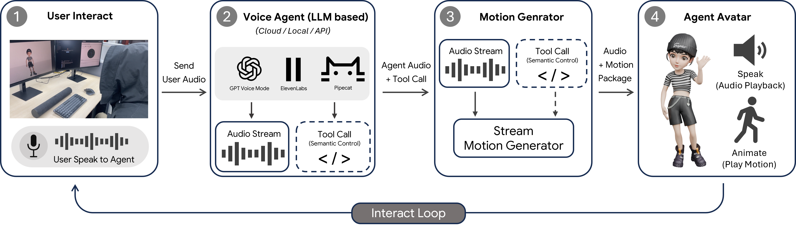

Real-time Deployment. Our system comprises three components: the user host machine, a voice agent, and the Motion Generator. The host machine captures the user's voice via microphone (1) and streams it to the voice agent (2). The voice agent can be an omni-model (e.g., OpenAI's GPT voice mode) or a cascaded pipeline of VAD, ASR, LLM, and TTS modules (e.g., ElevenLabs, Pipecat), and can be deployed in the cloud, run locally, or accessed via API. It outputs an audio stream and, when appropriate, emits semantic control signals through a tool-call interface. The Motion Generator (3) consumes the audio stream and synchronously produces a motion stream, optionally conditioned on a motion example retrieved via the semantic control signal. The time-aligned audio and motion are then packaged and sent to the Rendering Client Frontend on the host machine to drive and visualize the avatar (4), closing the interaction loop.

Real-time synthesis of high-fidelity 3D character motion from audio is a pivotal component for next-generation interactive avatars and virtual assistants. However, most existing approaches are limited to offline processing of complete audio sequences or are constrained to specific domains, rarely handling both speech and music effectively. In this paper, we introduce a novel framework designed to generate continuous, coherent full-body motion from streaming speech and music with low latency. Central to our approach is a unified streaming architecture capable of synthesizing continuous motion from incremental audio inputs. We employ a robust training strategy that enforces strong audio dependency, allowing the model to seamlessly generalize across conversational speech and rhythmic music without requiring explicit domain labels or mode switching. Additionally, we explored Reinforcement Learning to refine the quality of online generation. Furthermore, we bridge reactive animation with intent-driven behavior via a tool-call interface that allows upstream Large Language Models to inject explicit semantic control. By combining this controllability with stream audio-driven synthesis, our framework serves as a plug-and-play solution for transforming voice agents into interactive humanoid avatars. Extensive experiments demonstrate that our method outperforms state-of-the-art realtime baselines in motion quality and synchronization while maintaining the flexibility required for live deployment.
Beyond real-time generation, EchoAvatar operates as a plug-and-play module that accepts audio streams from diverse sources, ranging from web browsers to AI conversational platforms. In this demo, we show our system receiving an audio stream directly from a web browser, while users can optionally send semantic control signals in real-time through keyboard input to guide the avatar's animation.
EchoAvatar generates coherent full-body avatar motion for both conversational speech and rhythmic music under the same real-time streaming setting.
We conduct four ablation studies covering dataset composition, reward models, hierarchical token corruption, and tool calls. Click the + icon to view details.
EchoAvatar is jointly trained on music-dance and speech-gesture datasets. Compared with a model trained only on speech gestures, when driven by highly energetic "happy" speech, the model occasionally produces lively, rhythmic gestures that are not present in the original speech dataset. This suggests that our unified framework possesses a degree of generalization, mapping audio features to motion primitives regardless of the source domain.
During reinforcement learning, using only the audio-alignment reward without the motion-quality reward leads to physically errors and unnatural motions. Conversely, using only the motion-quality reward without the audio-alignment reward causes the generated motion to become overly static.
Without Hierarchical Token Corruption during training, the model fails to follow the audio signal and randomly generates extremely low-quality, dance-like motion.
It is well known that audio alone cannot accurately produce strongly semantic actions. Without tool calls, the upstream voice agent can only control motion generation through audio, making it difficult to explicitly inject semantic control during generation.
@inproceedings{chen2026echo,
author = {Bohong Chen and Yumeng Li and Yinglin Xu and Youyi Zheng and Yanlin Weng and Kun Zhou},
title = {EchoAvatar: Real-time Generative Avatar Animation from Audio Streams},
year = {2026},
isbn = {9798400725548},
publisher = {Association for Computing Machinery},
address = {New York, NY, USA},
url = {https://doi.org/10.1145/3799902.3811066},
doi = {10.1145/3799902.3811066},
booktitle = {Proceedings of the Special Interest Group on Computer Graphics and Interactive Techniques Conference Conference Papers},
series = {SIGGRAPH Conference Papers '26}
}